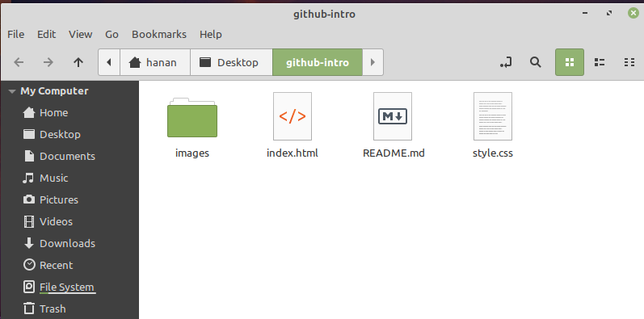
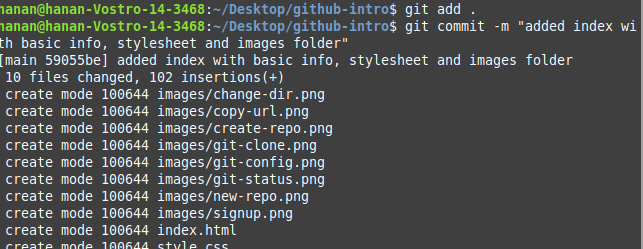
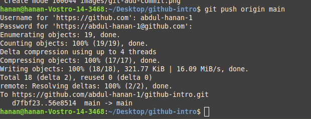
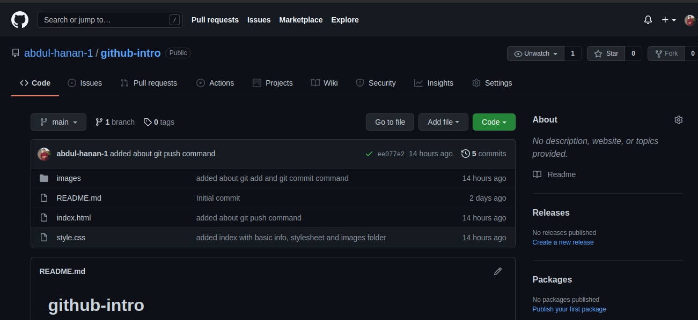
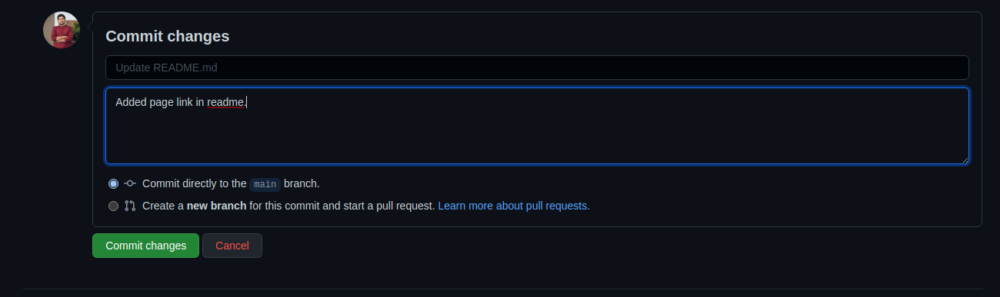
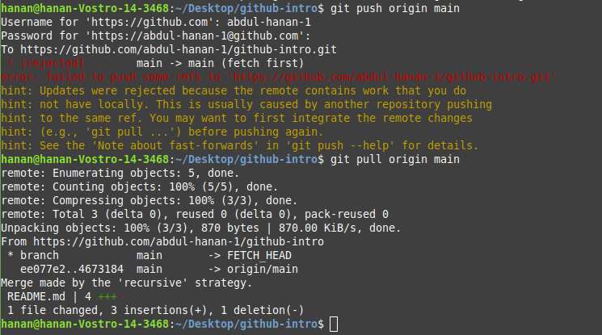
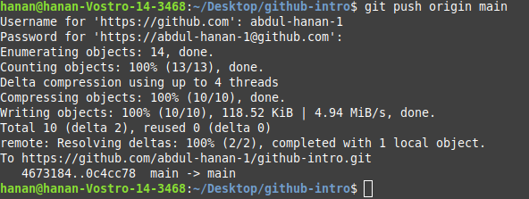

How to Use Git {Beginner's Guide}
بِسْمِ اللهِ الرَّحْمٰنِ الرَّحِيْمِ
Introduction
Git is the world's most popular version control system (VCS), and, consequently, knowing how to use Git has become a mandatory skill in the world of coding.
In this step-by-step beginner's guide, you will learn how to start using Git effectively.
What Is Git and What Is GitHub
Git is a free, open-source, distributed version control system that handles source code changes in software projects of all sizes. Git allows multiple developers to work together on the same project with ease.
On the other hand, GitHub is a company that offers a cloud-based repository allowing developers to store and manage their code and to track and control code changes. You can use Git without GitHub, but you can't use GitHub without Git.
Git Tutorial: How to Use Git {Beginner's Step-by-Step Guide}
Follow the steps below to get started using Git.
The first thing you need to do is to install Git and create a GitHub account.
After installing Git on your machine, the next step is to create a free GitHub account
Follow these steps:
Visit the official account creation page: Join Github
- Pick a username, enter your email address, and choose a password.
- Opt for or opt out of receiving updates and announcements by checking/unchecking the Email preferences checkbox.
- Verify you're not a robot by solving the Captcha puzzle.
- Click Create account.

GitHub allows you to keep track of your code when you're working with a team and need to modify the project's code collaboratively.
Follow these steps to create a new repository on GitHub:
- Log in and browse to the GitHub home page.
- Find the New repository option under the + sign next to your profile picture, in the top right corner.
- Enter a name for your repository, provide a brief description, and choose a privacy setting.
- Click the Create repository button


Follow these steps to clone the newly created repo to your local machine.
- Copy the URL of your new repository.
- Open your Terminal and move to the directory where you want to clone the repo.
- And run the command: git clone repo-url
- Now move into the directory created by cloning repo.


Use the git config user.email "your_email" and git config user.name "your_username" commands for this purpose.

Follow these steps to add changes and making them ready for pushing to remote repo.
- Add new files or make changes in existing files present in local repo folder
- Use the git add filename for adding a specific file or git add . for adding all the changes made in all files.
- And the run the git commit -m "commit-message" for commiting the local changes to be pushed to remote repo.


Use the git push origin [branchname] command to push your changes to remote repo.

And then take a look at your remote repo you'll see your local changes are now present there.

Suppose you make a change in your remote repo by editing it online in github.For example:

Now if you want to get the remote changes in your local repo you need to run the git pull command.
Suppose you are working in your local environment and you don't know that the remote has changed so when you will push your local changes you will get an error and will be asked to first get the remote changes by git pull. See the picture below to get better understanding.

And you can see that it has automatically merged your local changes with remote chaanges. And now you can push your changes succesfully.
